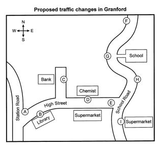
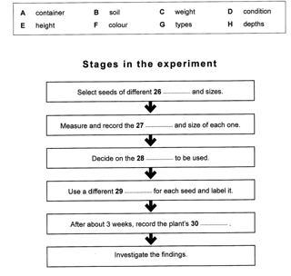

Listening visuals Cambridge 13Reviewed results: 122 confirmed issue records (86 duplicate pairs, 9 sequence inversions, 1 wrong-Part image, 26 clipped images); 23 suspected records. Counts overlap Parts/assets. Full reviewed CSV. Raw audit.json/findings.csv are detector output, not the final defect list. Fallback scope alone is not a defect. OCR ranges are incomplete hints.
All books · Cambridge 13: 16 Parts · exact current resolver outputCambridge 13 / Test 1 / Part 1
No confirmed/candidate defect detected; not a visual PASS
Q[1, 10]: 1
 #1 OCR Q[[1, 10]] · 1412×2008
#1 OCR Q[[1, 10]] · 1412×2008
PDF_011.png
assets/public/7fe88aebc17eace99dd99fd5799ade380175252f91832ab73cf72fc3f622ca6f.png
asset-7fe88aebc17eace99dd99fd5799ade380175252f91832ab73cf72fc3f622ca6fCambridge 13 / Test 1 / Part 2
V0270:confirmed:duplicate_content
Q[11, 13]: 1, 2, 3 [Part fallback]
Q[14, 20]: 1, 2, 3
 #1 OCR Q[[11, 20], [11, 13]] · 1412×2008
#1 OCR Q[[11, 20], [11, 13]] · 1412×2008
PDF_012.png
assets/public/9d87462fd83478dd4a152118b02f691d59d2d0347ca74fb34046db9c7fbac046.png
asset-9d87462fd83478dd4a152118b02f691d59d2d0347ca74fb34046db9c7fbac046 #2 OCR Q[[14, 20], [14, 20]] · 1412×2008
#2 OCR Q[[14, 20], [14, 20]] · 1412×2008
PDF_013.png
assets/public/22f23edd16341bfbbbb259333410765370071fb131d6bd68685c4fe2e1979ee0.png
asset-22f23edd16341bfbbbb259333410765370071fb131d6bd68685c4fe2e1979ee0
#3 OCR Q[] · 1101×992
Test_1_Section_2_Granford_Traffic_Map.png
assets/public/c97027fd19619f2ca952543450b8a625bf86a179d23236dd5af81c7df7b37954.png
asset-c97027fd19619f2ca952543450b8a625bf86a179d23236dd5af81c7df7b37954Cambridge 13 / Test 1 / Part 3
V0272:confirmed:duplicate_content
Q[21, 25]: 1, 2, 3 [Part fallback]
Q[26, 30]: 1, 2, 3
 #1 OCR Q[[21, 30], [21, 25]] · 1412×2008
#1 OCR Q[[21, 30], [21, 25]] · 1412×2008
PDF_014.png
assets/public/c66231d5633585ce30322460490315044e81e434375e1094fc47c9f23e0c25f6.png
asset-c66231d5633585ce30322460490315044e81e434375e1094fc47c9f23e0c25f6 #2 OCR Q[[26, 30], [26, 30]] · 1412×2008
#2 OCR Q[[26, 30], [26, 30]] · 1412×2008
PDF_015.png
assets/public/e6b144d4a1a7f0150e051ae7f7646a06ebec42ebd563a592e7f2c9b906c0b77d.png
asset-e6b144d4a1a7f0150e051ae7f7646a06ebec42ebd563a592e7f2c9b906c0b77d
#3 OCR Q[] · 1299×1235
Test_1_Section_3_Seed_Experiment_Flowchart.png
assets/public/7f5c2b47b021e48212c0bb0716567e944a54edbb93ec8f50e6211795231ca782.png
asset-7f5c2b47b021e48212c0bb0716567e944a54edbb93ec8f50e6211795231ca782Cambridge 13 / Test 1 / Part 4
No confirmed/candidate defect detected; not a visual PASS
Q[31, 40]: 1 [Part fallback]
 #1 OCR Q[[31, 40]] · 1412×2008
#1 OCR Q[[31, 40]] · 1412×2008
PDF_016.png
assets/public/8ad200e39741296223b832577008c2656a191dbbd3d872067e3dcde02404c08d.png
asset-8ad200e39741296223b832577008c2656a191dbbd3d872067e3dcde02404c08dCambridge 13 / Test 2 / Part 1
No confirmed/candidate defect detected; not a visual PASS
Q[1, 10]: 1 [Part fallback]
 #1 OCR Q[[1, 10]] · 1412×2008
#1 OCR Q[[1, 10]] · 1412×2008
PDF_033.png
assets/public/5a654d3f1be86f05ecfb9010f7455d70e77e5e44a1b8f6291b318577234c111f.png
asset-5a654d3f1be86f05ecfb9010f7455d70e77e5e44a1b8f6291b318577234c111fCambridge 13 / Test 2 / Part 2
No confirmed/candidate defect detected; not a visual PASS
Q[11, 16]: 1, 2 [Part fallback]
Q[17, 18]: 1, 2 [Part fallback]
Q[19, 20]: 1, 2 [Part fallback]
 #1 OCR Q[[11, 20]] · 1412×2008
#1 OCR Q[[11, 20]] · 1412×2008
PDF_034.png
assets/public/9c62a25856ff2a0292417d4fc28c51e8af7c5476d13e60fe3650691ec0c71631.png
asset-9c62a25856ff2a0292417d4fc28c51e8af7c5476d13e60fe3650691ec0c71631 #2 OCR Q[] · 1412×2008
#2 OCR Q[] · 1412×2008
PDF_035.png
assets/public/e6be0feb3baf7660cfa050445efea936a9f63062adbc72b4e0a6d58b2de6d039.png
asset-e6be0feb3baf7660cfa050445efea936a9f63062adbc72b4e0a6d58b2de6d039Cambridge 13 / Test 2 / Part 3
No confirmed/candidate defect detected; not a visual PASS
Q[21, 25]: 1, 2 [Part fallback]
Q[26, 30]: 1, 2 [Part fallback]
 #1 OCR Q[[21, 30], [21, 25]] · 1008×1434
#1 OCR Q[[21, 30], [21, 25]] · 1008×1434
PDF_036.png
assets/public/a5290e603f45d54811281c2b1fd7d965b907776fe6d0ec168c104b0892c5d371.png
asset-a5290e603f45d54811281c2b1fd7d965b907776fe6d0ec168c104b0892c5d371 #2 OCR Q[[26, 30], [26, 30]] · 1412×2008
#2 OCR Q[[26, 30], [26, 30]] · 1412×2008
PDF_037.png
assets/public/1afa9c5940437db0ff408db2a0639f82936cd90a1f512a0b30c09cfb3e84ef75.png
asset-1afa9c5940437db0ff408db2a0639f82936cd90a1f512a0b30c09cfb3e84ef75Cambridge 13 / Test 2 / Part 4
No confirmed/candidate defect detected; not a visual PASS
Q[31, 40]: 1 [Part fallback]
 #1 OCR Q[[31, 40]] · 1412×2008
#1 OCR Q[[31, 40]] · 1412×2008
PDF_038.png
assets/public/fd697be3bf0a6b0a5ec05f2e88f14fbb6b9a1e332f5ae21a6f0d61eb926fbfaf.png
asset-fd697be3bf0a6b0a5ec05f2e88f14fbb6b9a1e332f5ae21a6f0d61eb926fbfafCambridge 13 / Test 3 / Part 1
No confirmed/candidate defect detected; not a visual PASS
Q[1, 10]: 1 [Part fallback]
 #1 OCR Q[[1, 10]] · 1412×2008
#1 OCR Q[[1, 10]] · 1412×2008
PDF_055.png
assets/public/bd3427fb8484a02fd26150ba1fc503a97eacb12c874706044dd1461d5558a6ee.png
asset-bd3427fb8484a02fd26150ba1fc503a97eacb12c874706044dd1461d5558a6eeCambridge 13 / Test 3 / Part 2
No confirmed/candidate defect detected; not a visual PASS
Q[11, 16]: 1, 2 [Part fallback]
Q[17, 18]: 1, 2 [Part fallback]
Q[19, 20]: 1, 2 [Part fallback]
 #1 OCR Q[[11, 20], [11, 16], [11, 16]] · 1412×2008
#1 OCR Q[[11, 20], [11, 16], [11, 16]] · 1412×2008
PDF_056.png
assets/public/cb1fb5822901f765449afce7fe1dac1e5814d48222001fd0b732791951f51882.png
asset-cb1fb5822901f765449afce7fe1dac1e5814d48222001fd0b732791951f51882 #2 OCR Q[] · 1412×2008
#2 OCR Q[] · 1412×2008
PDF_057.png
assets/public/518dc2e150868016ebb6a2fa07eb9639b9d949969290bc59a21c7de23cdd505d.png
asset-518dc2e150868016ebb6a2fa07eb9639b9d949969290bc59a21c7de23cdd505dCambridge 13 / Test 3 / Part 3
No confirmed/candidate defect detected; not a visual PASS
Q[21, 24]: 1, 2 [Part fallback]
Q[25, 30]: 1, 2 [Part fallback]
 #1 OCR Q[[21, 30], [21, 24]] · 1412×2008
#1 OCR Q[[21, 30], [21, 24]] · 1412×2008
PDF_058.png
assets/public/56fb66aaad521917bbbf1f5357c155916e1fd89a590b567c8ed1d0cdb84aefe6.png
asset-56fb66aaad521917bbbf1f5357c155916e1fd89a590b567c8ed1d0cdb84aefe6 #2 OCR Q[[25, 30], [25, 30]] · 1412×2008
#2 OCR Q[[25, 30], [25, 30]] · 1412×2008
PDF_059.png
assets/public/a6b2b36d1833e6b57661c703c70ff04ca3a983c678a36c6d137fc34a908cc364.png
asset-a6b2b36d1833e6b57661c703c70ff04ca3a983c678a36c6d137fc34a908cc364Cambridge 13 / Test 3 / Part 4
No confirmed/candidate defect detected; not a visual PASS
Q[31, 40]: 1 [Part fallback]
 #1 OCR Q[[31, 40]] · 1412×2008
#1 OCR Q[[31, 40]] · 1412×2008
PDF_060.png
assets/public/bc710c48b0c92fefa5c6226340b81a832c01c9181257aaa97903ef87ee4356c4.png
asset-bc710c48b0c92fefa5c6226340b81a832c01c9181257aaa97903ef87ee4356c4Cambridge 13 / Test 4 / Part 1
No confirmed/candidate defect detected; not a visual PASS
Q[1, 10]: 1 [Part fallback]
 #1 OCR Q[[1, 10]] · 1412×2008
#1 OCR Q[[1, 10]] · 1412×2008
PDF_077.png
assets/public/0808340315b8adb711c97423c48d495e61c8f61d8f4064349d71ce0ca96bc438.png
asset-0808340315b8adb711c97423c48d495e61c8f61d8f4064349d71ce0ca96bc438Cambridge 13 / Test 4 / Part 2
No confirmed/candidate defect detected; not a visual PASS
Q[11, 16]: 1, 2 [Part fallback]
Q[17, 20]: 1, 2 [Part fallback]
 #1 OCR Q[[11, 20], [11, 16]] · 1412×2008
#1 OCR Q[[11, 20], [11, 16]] · 1412×2008
PDF_078.png
assets/public/6566e56507265d6d1af686e11e59f4c7b00b97672e177d629034d337e34bc868.png
asset-6566e56507265d6d1af686e11e59f4c7b00b97672e177d629034d337e34bc868 #2 OCR Q[[17, 20], [17, 20]] · 1412×2008
#2 OCR Q[[17, 20], [17, 20]] · 1412×2008
PDF_079.png
assets/public/e7417f555a68e7b7ba6e74e4899ccfa15777b0c506e3aee1d747b39d8a72d662.png
asset-e7417f555a68e7b7ba6e74e4899ccfa15777b0c506e3aee1d747b39d8a72d662Cambridge 13 / Test 4 / Part 3
No confirmed/candidate defect detected; not a visual PASS
Q[21, 26]: 1, 2 [Part fallback]
Q[27, 28]: 1, 2 [Part fallback]
Q[29, 30]: 1, 2 [Part fallback]
 #1 OCR Q[[21, 30], [21, 26]] · 1412×2008
#1 OCR Q[[21, 30], [21, 26]] · 1412×2008
PDF_080.png
assets/public/b130f4d081ff24d7a764de2b5696101830dc07a32b4111941a56ca63a24a29a2.png
asset-b130f4d081ff24d7a764de2b5696101830dc07a32b4111941a56ca63a24a29a2 #2 OCR Q[] · 1412×2008
#2 OCR Q[] · 1412×2008
PDF_081.png
assets/public/96e7155e1312ec6fae9c41c42af9b87e2e93d5fe08563422d598f28cb58f4e58.png
asset-96e7155e1312ec6fae9c41c42af9b87e2e93d5fe08563422d598f28cb58f4e58Cambridge 13 / Test 4 / Part 4
No confirmed/candidate defect detected; not a visual PASS
Q[31, 40]: 1 [Part fallback]
 #1 OCR Q[[31, 40]] · 1412×2008
#1 OCR Q[[31, 40]] · 1412×2008
PDF_082.png
assets/public/2bab23be536d2c69c234987c8e2c41ac3467a10c5e7299d2043d0764b5614049.png
asset-2bab23be536d2c69c234987c8e2c41ac3467a10c5e7299d2043d0764b5614049